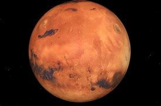

Mars

- Mars is the fourth planet from the Sun and the second-smallest planet in the Solar System
- Its orbit around the Sun takes 87.97 Earth days, the shortest of all the Sun's planets.
- The atmosphere of Mars is 95 percent carbon dioxide and the rest are Nitrogen,Argon,Carbon monoxide and other gases.
- Mars total density is 3.933 grams/cubic centimeter. The diameter of Mars is 6,792 kilometers.
- Mars appears reddish from a distance because of rusty dust suspended in the atmosphere. .